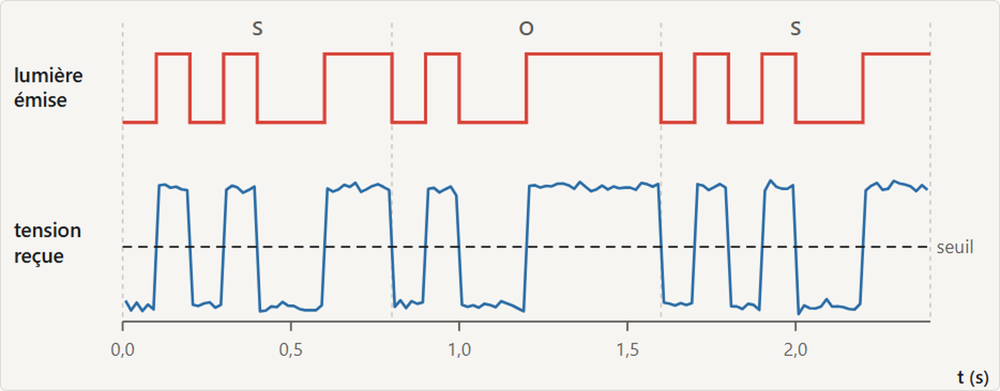
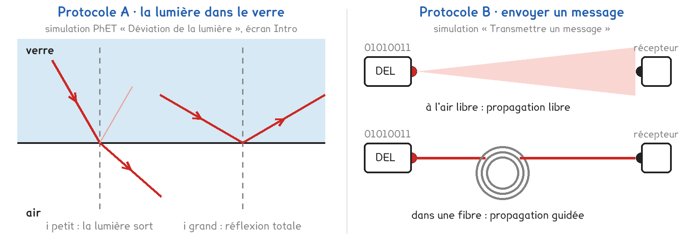
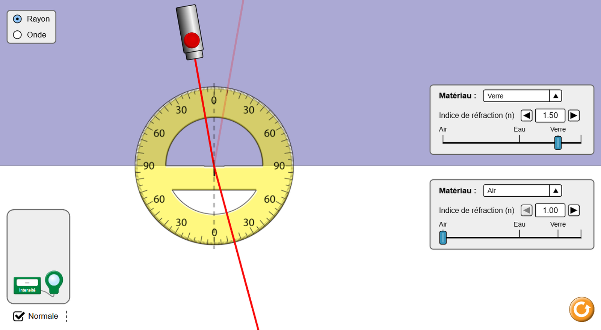

Tle Bac Pro · MELEC, CIEL, OBM, CTRM · TP sur simulation SIM-12
Pourquoi Internet arrive-t-il par une fibre de verre, et pas par de la lumière à travers l'air ?
3 figures
Sujet. La box reçoit Internet par une fibre optique, un fil de verre plus fin qu’un cheveu, long de plusieurs kilomètres. La télécommande, elle, envoie ses ordres par une lumière infrarouge, à travers l’air du salon.
Problématique : pourquoi Internet arrive-t-il par une fibre de verre, et pas par de la lumière à travers l’air ?
Les simulations. A : « Déviation de la lumière », écran Intro, sur phet.colorado.edu. Sans réseau : sa copie, le fichier phet/bending-light_fr.html. B : Ouvrir « Transmettre un message » : transmission.html, sur l’ENT ou la clé du professeur.
a) Compléter le tableau : deux systèmes de transmission de la maison.
| La télécommande | La box et sa fibre | |
|---|---|---|
| L’émetteur | une DEL infrarouge | …………………………… |
| Le milieu de propagation | …………………………… | …………………………… |
| Le récepteur | …………………………… | une photodiode |
| La propagation, entourer | libre · guidée | libre · guidée |
Avant d’être envoyé, un message est codé : chaque caractère devient 8 bits, des 0 et des 1, selon la table ASCII. La DEL s’allume pour un 1 et s’éteint pour un 0. Extrait de la table : A 01000001 · B 01000010 · C 01000011 · K 01001011 · O 01001111 · S 01010011.

Capture de la simulation « Transmettre un message » : le message SOS, envoyé à 2 m.
b) Sur la lumière émise, lire les 8 bits du premier caractère. Vérifier dans la table.
Les 8 bits lus : ……………………………… · ils codent la lettre ………
c) Lire la durée d’un bit. En déduire le débit, puis la durée d’envoi de SOS, 24 bits.
Durée d’un bit : ……… s · débit = 1 ÷ durée d’un bit = ……… bit/s · SOS : ……… s
Deux protocoles répondent à la même question, chacun sur sa simulation. Une partie de la classe prend A, l’autre prend B, et on compare à la fin.

Protocole A · la lumière dans le verre. Un laser envoie un rayon du verre vers l’air. On change l’angle d’incidence et on cherche quand la lumière ne sort plus : c’est ce qui la garde dans une fibre.
Protocole B · envoyer un message. Une DEL envoie SOS à un récepteur, à travers l’air ou au bout d’une fibre. On éloigne le récepteur, ou on allonge la fibre, jusqu’aux premiers bits faux.
d) Compléter le tableau pour comparer les deux protocoles.
| Protocole A | Protocole B | |
|---|---|---|
| Ce qu’on règle | …………………………… | …………………………… |
| Ce qu’on mesure | …………………………… | …………………………… |
| Il répond à, entourer | pourquoi · jusqu’où | pourquoi · jusqu’où |
Le choix se fait maintenant, avant d’ouvrir la simulation.
e) Quel protocole prenez-vous ? Justifier en une phrase.
Le professeur peut imposer celui qui reste disponible.
Je prends le protocole ……… parce que ……………………………………………………………………
f) Hypothèse : jusqu’où le message arrive-t-il sans erreur ? Entourer.
À l’air libre, salle éclairée : 50 cm · 5 m · 500 m · 5 km
Dans une fibre de verre : 50 cm · 5 m · 500 m · 5 km
Avant de commencer. Groupe A : ouvrir « Déviation de la lumière », écran Intro, et laisser Rayon coché. Groupe B : ouvrir transmission.html et garder le message SOS.

Capture de la simulation « Déviation de la lumière », PhET Interactive Simulations, University of Colorado Boulder, CC BY-NC 4.0.
g) Relever les angles de réfraction, puis les deux angles limites.
| Angle d’incidence i (°) | 20 | 30 | 40 |
|---|---|---|---|
| Angle de réfraction r (°) |
Angle limite, verre et air : ……… ° · cœur et gaine : ……… °
h) Relever la durée d’envoi, puis les portées et le signal à la portée.
Durée d’envoi de SOS à 10 bit/s : ……… s
| Liaison | air, salle éclairée | air, obscurité | fibre plastique | fibre de verre |
|---|---|---|---|---|
| Portée | ||||
| Signal à la portée (mV) |
Une consigne de schéma, pour les deux groupes.
i) Une fibre fait un coude. Dessiner le trajet d’un rayon qui y entre.
Marquer d’une croix chaque réflexion totale.
Le schéma se dessine sur la feuille du TP.
j) Groupe A : calculer l’angle limite ℓ, sin ℓ = nair ÷ nverre = 1,00 ÷ 1,50.
Groupe B : calculer la durée d’envoi de SOS à 10 bit/s. Comparer à la mesure.
k) Échanger avec un groupe de l’autre protocole : pourquoi la lumière reste-t-elle dans
la fibre, combien de fois plus loin porte-t-elle ? L’hypothèse f tient-elle ?
l) Citer ce qu’un vrai montage montrerait, et que la simulation cache.
m) Répondre à la problématique en deux phrases.
Ce que ce TP a établi, et qui vaut pour toute transmission par la lumière :
À RETENIR
Transmettre une information, c’est émettre une onde, la laisser se propager, puis la recevoir. Le message est d’abord codé en bits ; le débit est le nombre de bits envoyés par seconde.
À l’air libre, la propagation est libre : la lumière s’étale, celle de la pièce la brouille, et le message ne porte qu’à quelques mètres. Dans une fibre, elle est guidée : la lumière frappe la paroi au-delà de l’angle limite, elle est totalement réfléchie et reste piégée. Le message porte à des kilomètres.
Une photo de téléphone pèse environ 2 Mo, soit 16 000 000 bits. Combien de temps faut-il pour l’envoyer à 10 bit/s ? Et par la fibre de la box, à 1 000 000 000 bit/s ?
TP sur simulation de physique-chimie. Le travail se fait sur la feuille du TP : cette page en est la version à l'écran, sans les lignes à remplir. Rien n'est enregistré.